A new frame of mind for the upcoming year and a dive into "As We May Think" by Vannevar Bush (1945).
A New Philosophy (Purpose > Motivation)
As the first week of university draws to a close, I can't help but feel a bit excited and overwhelmed about the new skills I will acquire in the year to come. Throughout the break, I have had time to re-evaluate my approach to learning and in turn tackle my academics this year from a fresh perspective. My approach to university last year was very mark-centric and tended to fall prey to favoritism, not the healthiest learning mindset, and hence everything felt like a blur with a few concepts that seem to have stuck around and the others lost in the void of my brain. Very noticeably I enjoyed the game dev/coding side of the course and tended to give SUPREME effort into that end, and as a result have not made the most of my available resources. My approach this year will try and even out the playing field and allow me to give equal attention to each of my modules. This will have to come with great discipline and hence I have adopted the "Purpose > Motivation" philosophy.
Motivation is great, we love that feeling we have of wanting to get started on something especially at the beginning of the year:
motivation to study more.
motivation to start exercising every day.
motivation to start eating healthier.
...
But one drawback is that motivation is a feeling. Feelings come and go very easily and are hard to control if you don't practice. That is why motivation can come just as easy as it goes. Purpose on the other hand is a more solid structure. We do things with a purpose/reason behind it.
eating to replenish my body's fuel source.
sleeping to recharge
working to make money.
studying to be able to get into work.
These can all differ from person to person, but the general idea is that we do A to achieve B. A purpose gives meaning to the action because there is an end in mind. This philosophy will serve as a baseline for my approach of being a student not only in the realm of university but as a student for what life has to offer.
As We May Think - Vannevar Bush 1945
Reading has played a big factor in this new approach; I've only recently started reading around March 2023. Especially throughout this holiday I've grown to thoroughly enjoy it. One thing I didn't enjoy as much last year was academic reading... it felt long repetitive and tedious. With the new mindset in place, tackling this week's reading wasn't all too bad, I might even go as far as to say I enjoyed it!
In short, As We May Think was Bush's conception of what the modern-day computer might be. He called it the MEMEX. A device that can call on files from a large library and splice together different information in order to streamline the research pipeline. We must bear in mind that back in the day (1945) the internet didn't exist. Information was a hassle to get a hold of (in today's terms). Different mediums called for different storage devices. These devices took up physical space (not digital) that you had to sort and share. 1945 marked the end of World War 2, as well as a boom in the realm of science. Scientist from vastly different fields realized that their research could prove helpful in the most unexpected cases. Different fields of study borrowing from other fields of study was great! but it was also difficult knowing where to look for the right information, contacting the right people, the process of delivering that information... you get the idea. The MEMEX was Bush's vision of breaking that barrier. If information could be easily transported, the creation and production of research will greatly improve leading to an information boom that would've been groundbreaking at the time. Similar to how the first printing presses allowed for the transfer of information through text, the creation of the MEMEX will transform society with its exposure to this new availability of information. A good chunk of the reading is spent on the progress man has made to store different types of information, visual, textual and auditory and the extents at which we have iteratively improved the systems we use to store them.
What blew my mind away was finding out the Bush was a part of the Manhattan project. For those of your who might not know, it was a project dedicated to the creation of nuclear weaponry. It was quite fascinating to me how a scientist behind the research of pure destructive power was able to describe what is known as a modern computer today.
Git & GitHub
Since I have experience with GitHub as a version control software, Git wasn't too much to handle. Git just felt like GitHub with a few different steps. What I found pretty cool was that the version control was within the Visual Studio Code editor, this makes it a lot less tedious to manage version control.
Cool stuff on the internet
This is a pretty website that demonstrates particle life simulation. Each colored particle is given an attraction/repulsion value to other colored particles. You are able to alter these rules and watch as the magic happens before your eyes. It's crazy how with these simple rules a computer is able to create such a beautiful phenomenon. I'd suggest that you give it a try yourself.
Planning and research for the general direciton of my first website.
URL scheme
With regards to the URL scheme, I would like to make my portfolio website a secure site. In order to make it a secure website, I will have to follow a protocol that will allow me to obtain and install an SSL (Secure Sockets Layer). To be very honest... on a surface-level it seems do-able but taking a second glance at it makes it look like more and more of a hassle. In order to get an SSL you have to register your website by generating a CSR (Certificate Signing Request) on your server. I'm not too sure if I can make my school laptop a functioning server to host my website... but it doesn't seem like a good idea. But that is only one of the many issues and decisions I will have to make with regards to obtaining an SSL (at the moment I am severely underqualified and ignorant). So, for the time being I will just have to stick with keeping it as an HTTP (Hypertext Transfer Protocol) instead of HTTPS (Hypertext Transfer Protocol Secure). edit: I just realized GitHub does all the admin for you! THANK YOU GITHUB!
Folder Structure
The folder structure of your website can vary depending on what purpose the website was made to serve, as well as personal preference. We were warned that throughout the course of creating out websites, we will go through multiple iterations until a suitable one finally emerges. As of now, my folder structure is as follows:
BlogFile (folder)
Store html files for the weekly blog posts, allowing for the structure to look neat as well as functionally accessible.
Images
Store all the images that the website will require.
Portfolio
Store all the html files that will have anything to do with my portfolio
Scripts
Store JavaScript code and allows for it to be neat and accessible.
Style
Store CSS code and allows for it to be neat and accessible.
index.html (homepage)
Will include a short bio about each page of the website and offer a link to direct the user to the page that manages the desired info.
My wireframes are inspired by the general design trend that seems to appear within the websites mentioned above. The smooth, simplistic and satisfying UI makes these websites professional and creative. They display colourful and impressive videos and screenshots of what their product is able to achieve. I would like to approach my portfolio website in a similar fashion where I show my work in the background and what I am capable of, after all its what a portfolio website is all about!
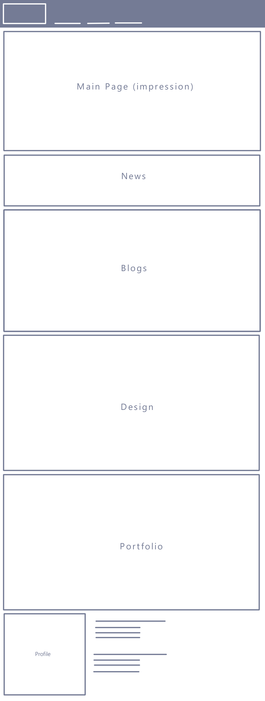
Interaction & www
Interaction, to my understanding, is the quality of "something" that is responsive in a predictable manner and the effort required to interact with "something" is not obvious, but it possesses the ability to change the "something". Interaction within the context of the internet can determine whether or not the user experience is satisfying or not. In the video
Normal Doors & Human-Centered Design
, it explains a concept called the "Norman door". A Norman door is a door where the design tells a person to do the opposite of what the person should actually do. In the video it is represented by this door that EVERYONE in the building hates, because it has a pull handle on the push-side of the door. This deceives the person interacting with the door into thinking they are on the pull-side of the door, leading them to make the mistake of yanking instead of pushing (very frustrating indeed!)
When making UI, DO NOT make Norman Door-like UI. This frustration will lead to a kak (excuse the French) user experience. Make sure that the UI looks like what it is meant to do. The experience of interacting with good UI must feel seamless. Things simply do what you expect them to do.
"An artist's job is to de-familiarize whereas a designer's job is to use the familiarized!" to paraphrase my lecturer (Mrs. Hanli Geyser)
'You Say You Want a Revolution? Hypertext and the Laws of Media (1991)' - Moulthrop, S.
Xanadu, a globally accessible library of information monitored by a link-and-retrieve system, is a concept introduced by Theodor Holm Nelson said to revolutionize the world! Similar to how Vannevar Bush conceptualized the MEMEX and how it described the modern-day computer. Nelson was describing what is now known as the World Wide Web. Nelson dives into the intricacies of what this technology may offer society and in turn what may result of humanity because of this technology. He describes in a freakishly familiar yet dated manner of what is to come of a society if information were to become readily available and expandable. Moulthrop uses McLuhan's 4 questions from 'Laws of Media' (1991) as a framework to understand the potential within hypertext. These questions are:
What does hypertext enhance or intensify?
What does hypertext render obsolete or displace?
What does it retrieve that was previously obsolete?
What does it produce or become when taken to its limits?
Moulthrop describes hypertext as not fundamentally new, it is but a recursion or extension of print. The new added feature being: users having the ability to construct discourse instead of just being a consumer of one. Back in the day only qualified people were able to publish written work (on paper) and hence there was an information hierarchy. Only the qualified were allowed to produce information, the "un-qualified" were only allowed to be humble consumers. Hypertext smashes this hierarchy by allowing all users to produce work. Moulthrop suggests that users will become "paranoids" as a result of this. Since users will uphold their discourse with a sense of authority and tracing that authority will end up being quite difficult.
The obvious answer might be books, but you will be gravely mistaken. Moulthrop instead points out that what hypertext will render obsolete is post-literacy. Hypertext will ensure the continuation of human knowledge and wisdom and act as an endless library of information.
Xanadu offers the opportunity for the re-awakening of primary literacy as a mass phenomenon, and in turn also gives hand to the continuation of secondary literacy. This comes as a result of offering users the cyberspace required to shape interactive discourse.
When hypertext is taken to its limit, it hands the control of cultural work to the audience of the world. There will be a big change with regards to the power game, since everyone has the ability to access and expand upon information. Social views may be openly disclosed, and information becomes a form of capital. The more you have the more power you possess.
Although the concept Xanadu was conceived before the www, it was a bit late to the party... (only releasing in 2014). But the social, political and literary influence of the www can be clearly seen today. Nelson's predictions to what society will come to has become quite familiar in today's setting and may even further predict what the future has in stall!
Exploring UI and UX design and integrating Semantic Markup.
Alignment
The alignment of a website can outline the purpose of its design. This sense of direction can better help a website carry out the task that it was meant to do, whether it's selling a product, displaying work or made simply for browsing. All the choices that a designer makes are made with this "alignment" in mind, and they can either assist or obstruct the purpose of the website.
On a more philosophical note, we all have our own "alignment". This alignment is better described as our ideal self, the person we want to become, someone you've been working towards. Similar to the realms of web design, we each make decisions that aid our journey of manifesting this ideal self. I will use a Cherokee fable as metaphor.
Within each of us lives 2 wolves in constant battle.
One, kind and just.
The other, cruel and malevolent.
The wolf that wins, is the wolf you choose to feed.
Each decision you make can either assist or obstruct the journey of becoming your ideal self. So, choose carefully!
My Web Alignment
The goal for this website is for future employers, or people of interest, to scout my portfolio and get a grasp of who I am, what my skills are, and past projects I've worked on. Users should be able to browse through the contents of this website and gain insight into the level of work I am able to produce.
My target audience are employers (within the programing or gaming industry), that want more insight or tangible proof that I am a suitable candidate for the open position. The attraction points for such an audience would be past projects that display my current skillset, and I'm assuming that they would also like to play/use the things I've developed.
Hence, I will display the information of my website in a manner that highlights the work that I produce and makes it easily accessible to see my latest projects. The user experience will also leave a lasting impression on the level of work I am able to produce. In order to align this experience with the purpose of the website, I will ensure that users are greeted with a professional yet personal setting. I will follow the UI and UX trends that companies such as Riot Games, Unity, and Unreal Engine seem to fall under. This will, hopefully, make a bold statement to the user and clearly state my intentions.
Semantic Markup
After learning about semantic markup this week, I decided to implement this newfound standard into my website.
These changes include:
changing all div-elements into article and section-elements
adding alt-attributes to all my images
Reordering my h1-h6 elements to form a user-friendly hierarchy.
Adding a nav-element for navigational links
With the addition of these features, more people will be able engage with my website without difficulty or exclusion.
This process will guide me throughout the rest of my website's development. Certain elements may change over time, but design is an iterative process so its ok! This process includes:
Goal Alignment
Information Structure
User Flow
Interface
Design
Implementation
Goal Alignment
My goal for this website is to show future employers and people of interest the skills I am capable of and to give them a brief introduction to who I am. I want users to see:
my unity projects and builds
coding projects (including this website)
my profile
users should be able to freely explore the portfolio website and get a good idea of who I am and what I do. Users would want to see:
a display of my skills (game design, programing)
get a brief introduction... to me? of me? (English was a struggle here)
Information Structure
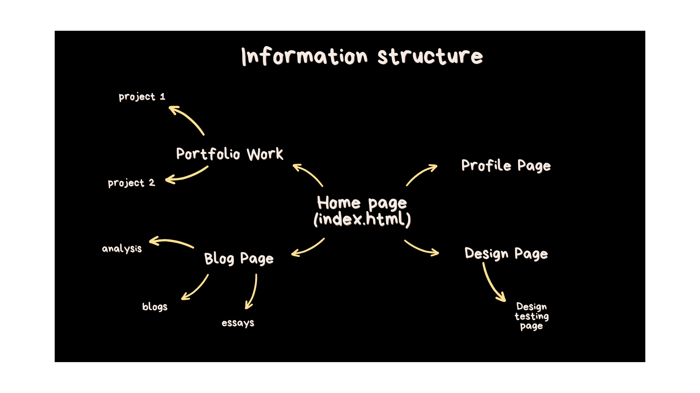
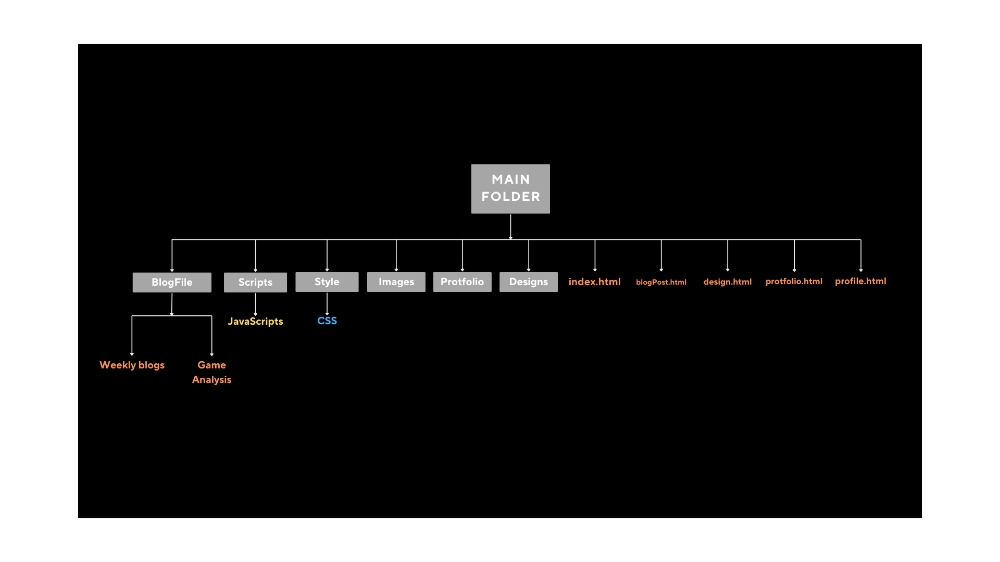
User Flow
I will create a semiotic system that looks and feels predictable. This will allow for better user experience and interaction.
I will keep in mind the 3-click rule; users should be able to get to wherever they'd like in 3 clicks.
Interface Elements
I will ensure that the Navigational and Informational components are implemented clearly and represented in a user-friendly approach.
Landing Page
Portfolio Page
Blogs and Essays Page
Blog/Essay/Analysis Page
Design Page
About Me Page
Design Principles
In order to design successful and user-friendly UX and UI, I will implement the core principles of UX and UI. These elements will also give the user a first glance idea of who I am and what I find important.
Implementation
I haven't started learning JavaScript and CSS, so the website just contains the folder structure and semantic markup I've managed to implement on HTML. I just need to make sure that any in-line code is taken care of before I start adding CSS and JavaScript into the website to prevent future disaster.
Website Progress
Its currently the 4th week since the birth of this website, and I must say I've really enjoyed the learning process. I enjoyed learning HTML. The process of building a website and being able to traverse through this public virtual page that I have created is a new experience that is very different from putting my games on itch. So far, I am happy with the file layout of the website. I feel comfortable writing code that draws information from different files because of the intuitive system I've created for myself to navigate.
At the moment, the website just looks a bit "nude", so I am looking forward to learning CSS so it can look a more clothed and appropriate... I am also looking forward to learning JavaScript, since that opens the doors to creating web-art similar to particle life and boids algorithms that I want to give a shot.
In search of a South African website to analyze I decided to take a look at some award-winning site according to
Awwwards.
Here are the 3 websites that I decided to analyze.
The visual aesthetic of the website is rather unique. But it can be a bit overwhelming/overstimulating for the user.
Button Motif:
the buttons played a small animation every time my mouse hovered over.
This creates a visual signifier that the user can easily associate meaning with.
The signified being, when I press this button the web page will do something.
follows the laws of locality.
they are where it effects change.
placed in relative area.
used a pop-up for the buttons that are too far i.e. Menu and Sl_01 buttons (top right)
Text
most of the fonts are legible and easy to read.
the fonts change between white and black depending on the background, making it more readable.
Loading Screen
this tells the user visually that the website is loading instead of them looking at a blank screen with no feedback.
the loading screen communicates the brands voice and style immediately
visually appealing and technically impressive (I'm not sure how this translates semantically).
Scalability
Remains functional
Retains the style and aesthetic very well
Semantic Markup
Using the inspector tool, as far as I can tell, the website uses semantic mark-up very well.
Cons:
Buttons
on touchscreen tablet the buttons lose their animation motif.
Visual Graphics
The photos and videos are very high-contrast and highly saturated, making it a bit difficult for the eye to keep track of all the information on the screen.
On the laptop version, some of the images overlap the text and make it difficult to read.
Some of the videos/ images shown in the background change when the users hover over certain buttons, making it very visually over-stimulating.
While strolling through the site, different elements scroll and stop at different times, adding to the visual overstimulation.
Semantic Markup
there are a few empty div's, that I'm guessing are used for the more technical side of the visuals, and to my knowledge it's not the best semantic practice.
Optimisation
The website sometimes behaves funny when you reload it. This is probably a result of the highly technical visuals that were implemented.
the buttons play a satisfying animation when your mouse hovers over.
This allows the user to form signified and signifier relationships
The visual pattern that this formulates creates an engaging interactive experience (especially at the end where they display the brands they've worked with).
Visual Aesthetic
the site minimalistic and comfortable to look at
the colours are muted and don't create a lot of visual conflict.
Interactive Images
The images react with an animation when the user hovers over them.
It makes the website feel responsive to the users actions.
Cookies
the site asks for cookies very subtly on the bottom right of the screen.
users might even miss this if they don't look carefully.
They don't make it an obligation for the user to accept or decline the cookies.
Scalability
the website scales well, retaining this visual style and functionality.
Semantic Markup
there are a few empty div's, that I'm guessing are used for the more technical side of the visuals, and to my knowledge it's not the best semantic practice.
Loading Screen
this tells the user visually that the website is loading instead of them looking at a blank screen with no feedback.
the loading screen communicates the brands voice and style immediately.
visually appealing and technically impressive (I'm not sure how this translates semantically).
Cons:
Interactivity
the website loses a lot of its interactive features when used on a touchscreen device.
buttons and images don't play an animation anymore.
Thats all the cons I can identify with this website.
A discussion on Bryan Cantrill's talk about ethical dilemmas in software engineering.
Ethical Dilemmas in Software Engineering
After watching Bryan Cantrills' talk about Andreessen's Corollary, I was suddenly made aware of all the ethical dilemmas that designers have to face throughout the process of a design. Cantrill gives a few examples that gave me new perspectives as a designer. It is important that we are aware of past mistakes so that we do not repeat them. The mistakes we learn from must not be limited to just ourselves. We must look outward and learn from the mistakes that others have made in order to create a diverse understanding of the ethical quandaries that society might face.
Ethics can also evolve through time. This is seen in how the first code of ethics for software engineering (1997) has evolved into the ACM's new and more modern code of ethics (2018). As Cantrill goes through the list of ethics released in 1997, he playfully jokes about how many of the developers today will barely be able to make it past the first few codes
The code of ethics made in 1997 had 8 principles:
Public - consistently act with the public in mind.
Client and Employer - act in the best interests of the client and employer
Product - ensure that all products meet high professional standards.
Judgment - maintain high integrity and independence.
Management - managers and leaders must promote an ethical approach to the development and maintenance of software.
Profession - advance with the integrity and reputation of the profession
Colleagues - be fair and supportive of colleagues.
Self - lifelong learning with the practice and promote ethical approaches.
Each principle had smaller more detailed rules. They are very detailed and in, today's society, very easy to overstep or overlook.
Ethical Dilemmas
Below are some of the ethical dilemmas that Cantrill recalled in the talk. I will briefly introduce and discuss some of the interesting points I picked up.
2012: Facebook emotional manipulation
In 2012, a bunch of researchers wanted to conduct an experiment where they would alter a person's Facebook news feed to either be filled with good news ore bad news. There were 3 test groups: Positive, Negative and Neutral. If you were a part of the Positive group, you would only receive news about good things that happened, and all bad news would be disregarded. On the later, if you were a part of the Negative group, you would only receive bad news and no good news. The Neutral group was a control. But the effect of this would be that people had their personal lives disrupted, some candidates within the Negative group became depressed and anxious as a result of the constant stream of bad news. Facebook was manipulating their clients' emotions by altering the content that they were exposed to. They backed it up by saying that it complied with their data use policy. This begs the question of whether imposing emotional distress on civilians, who weren't aware that they were part of an experiment, is ethical for the collection of academic research.
With social media algorithms gathering user data to assemble a feed specific to each user, the ethical assembly of this feed is very fragile. Most of the time people get addicted to media as a result of this endless feed of content. What are the backlashes of creating this social media addiction? Big corporates make more money, but innocent civilians are easily manipulated via social media. Who must be held accountable for health risks involved with excessive use of social media? Is it the user because they had the free will to stop? Or is it the corporates who embedded this addiction in their design?
Uber Greyball
When Uber was picking up and branching out to different locales, they had to first get approval from the cities. Some cities wouldn't approve Ubers service, but Uber had other plans. Uber thought that these cities would use their app to check if any cabs were in their area and file an issue. So, Uber very cleverly changed the view of maps for users in the disapproving cities. Usually, users will be able to see all the cabs in the area but in this case, Uber hid all the cabs. This program was put in place to evade the law. Although Uber provides a useful service, by-passing a cities law in order to provide that service borders into ethical quandary.
This selective disclosure of information is very sketchy. Its telling a truth by hiding the lies. The scary part is that users won't be aware of such an issue unless they are made aware. Ignorance is bliss, but in this case, that ignorance is curated by corporates.
A close reading of "Towards a study of information geograhpies" by Graham (2015) and "Internet Access is a Fundamental Right" by Kasapis (2020).
Information Geographies
The reading, “Towards a study of information geographies”, sheds light on the idea that geography and information are interconnected. For example, Table Mountain is a geographical space but the information about it on newspapers, blogs, posters, books… all play a crucial role in forming a general understanding of the place. The geographical location and the informational existence of the object are involved in a constantly evolving interplay of how the place is represented. This representation can affect our understanding of the place/geography. The reading reminds us that the geographical presence that a place has on the globe, doesn’t necessarily reflect its informational presence. The augmentation of the geography is instead a medium that shapes the geography itself. If geographical augmentation plays such a crucial role in representation, it is important to bear in mind the geographical inequalities of internet penetration. If a geography isn’t able to access the internet or informational systems, the geographical augmentation of that country will lend itself to be determined by external sources. This can greatly impact the way in which certain geographies are represented. This is even more important since we live in an age of “post-information scarcity”. When information was still transported using books and paper, the people who controlled the creation, distribution and storage of the mediums required a certain skillset to manage the data/info. This limits the access to information and the ability to create it, leading to a hegemonic mode of representation and participation. Access to computers lowered the barrier of entry and placed the people with access on equal footing, creating a more data-rich environment that all users are able to access. Giving a portion of the world’s population responsibility over the representation of different geographies opens up a new range of possibilities for the creation of more information, but the problem also lies in the fact that not everyone has access to the internet. The responsibility of representation will only exist in the hands of the people who do, and even more so for those who control/monitor these systems.
As a South African web developer, I see it as a responsibility to play a role in the active creation, distribution, and participation of information with regards to how I represent the products that I produce. The information that I distribute can play a role in the representation of South Africa’s geographical augmentation. Hence my work will have a direct relationship with regards to how South Africa is represented to the world and the people living in it. This is a responsibility that all web developers should have, with regards to what information they decide to create and spread across the internet.
Internet Access is a Fundamental Right
Salvador Allende states that happiness is a human right.” The lack of food, education, health care and fair working conditions are obstacles to achieving happiness”. This makes it so that the mentioned points are also human rights. The internet has also found itself upon that list, just as rightfully as education and work have. During the pandemic, when we were expected to socially distance, education and work had to take on a new form of media via the internet. Those who did not have access to the internet were massively excluded from a new kind of digital economy. Students without internet struggled to receive an education and didn’t have access to the massive information network of the internet. The reading highlights the importance of digital equality and raises the questions:
“Should all citizens have access to the internet - regardless of income – and if so, are governments supposed to take care of it?”
“What should be the rules governing the internet and who will set them?”
To try to answer the first question, I believe that all citizens should have access to the internet. The internet serves as a massive library of information and since education and fair working conditions are already a right, access to this massive library should also be considered. Providing citizens with free access to this kind of knowledge is an investment that moves society towards an informed and digitally equal community.
I will not be able to provide a full answer for the second question but will try my best to come up with a general direction that we should approach creating the rules. With regards to who should be setting the rules, I believe that everyone should have a bit of input as to what governs the rules. Since these rules would revolve around ethics (which are constantly changing), they should be revised within a certain interval. The internet should be a safe space where individuals feel comfortable in creating, sharing, and participating in informational activities.
A close reading of "How Geography Shapes - and is Shaped by - the Internet" by Greenstein (2018).
This reading discusses how the internet has played a role in reducing the communication, transportation, and search costs across various locations. The extent of this reduction is influenced by aspects such as the local preferences, availability of substitutes, and complements. The internet has brought with it the death of distance. It lowers the barrier of physical distance with regards to economic activities by creating an economic landscape that doesn't rely on face-to-face interactions.
There is a variance with regards to how people adopt and use the internet. A factor that plays a role in the variance of internet use and adoption is the geographical location. The geographical variance of internet adoption introduces a variance of distribution, communication and search. Adoption of the internet requires complementary inputs, such as the broadband service and expertise of implementation. The price of adoption can also vary with regards to the geography. Individuals can be influenced by the type of environment they were raised in, greatly determined by the characteristics of the location.
Internet adoption raises questions of employment. There have been instances where the internet has led to employment growth and wage gains due to the lower costs of communication. Another perspective introduces the fact that internet access disproportionally benefits certain regions, leaving others in the dust. Access to the internet also requires a certain set of skills such as skilled labor and informational inputs which can influence the returns of adopting the internet.
The adoption of the internet brings with it a handful of consequences. The consequences include:
Wealth and Productivity
Innovation
Consumer Behaviour
Globalization and Trade
Most of the consequences are influenced by the internet's ability to transcend physical distance. This makes it easier for people to break physical barriers and lower the cost and inefficiencies of certain processes. Scientists can communicate, collaborate and share information a lot easier. Consumers have easy access to non-local sources and reduces costs over a range of aspects. The globalization and trade of a company has reduced coordination costs and enables global economic participation. The introduction of new technologies reshapes the global capital flows and the uneven distribution of these technologies allows for research into how technology has influenced the different economies across the globe.
My process of implementing JavaScript into my first website and relfecting on "Towards Decolonizing Computational Sciences" by Birhane and Guest (2020)
Incorporating JavaScript
I struggled to look for areas to incorporate JavaScript without the inclusion of CSS. In order to streamline my interaction design, I had to stretch and mold my perspective so that I could experienced my site as a user instead of a dev. This change of perspective allowed me to re-think how I approached my design, especially at its current (CSS-less) state. In order to give the user interactive feedback, I implemented code that capitalized the innerText's of my homepage hyperlinks. This communicates to the user that they are currently hovering over an interactable piece of UI.
An area that required me to heavily restructure my website was the nav-bar. Implementing a nav-bar on every page using JavaScript forced me to delete the existing content within all my
<nav>
elements. Implementing the nav-bar was a rather painful process, since the file paths were all muddled up after revamping my folder structure. I used a similar technique for integrating a nav-bar from my design pages. This made it easier to add more pages without having to worry about changing all the
<nav>
elements within the html.
Putting myself in a users shoes and visiting my blog page, I realized how much of a nightmare it must be to stumble across a page filled with text. I manipulated the nesting of elements and implemented a code that only shows the heading, description, author (me) and date of each blog. When a user clicks on the heading, the rest of the blogs content is revealed. In order to give users a sense of control, I made it so that you can collapse the blog again whenever you are done reading it.
This process of altering my HTML whilst incorporating JavaScript brought to my awareness the importance of writing HTML with JavaScript in mind. Doing this in the future will allow me to streamline the development process of my future websites. For now, I must be open to any further changes I might have to make with regards to implementing CSS.
"Towards Decolonizing Computational Sciences" by Birhane and Guest (2020)
This reading sheds light on the issue of colonial behavior within the realm of academia, more specifically within the computational sciences. We must first bring ourselves to recognize the systemic issues that have been deeply routed within the academic field. This can be difficult, especially since the system is governed in a hierarchical manner which further implies the colonial roots of the issue. The reading also encourages us to not only look at the individual issues of colonialism, but to address the systematic problems within academia.
The reading also discusses how women of colour face abuse and discrimination within an academic setting, particularly black women. This mistreatment can rage from their academic input being more heavily scrutinized compared to other academics to their work being erased or forgotten from the academic scene.
There is a need for critical engagement and reevaluation of academic traditions. This will highlight the issues that have conditioned racism and white supremacy into the field of academia. The paper makes a direct call to rethink a large portion of the academic landscape in order to eliminate harmful ideologies.
Finding my footing with CSS and the benefits and challenges of responsive design.
The First Bit of CSS
I decided to start by incorporating CSS into the nav bar since this element will be seen persistently throughout the website. This was a lot more challenging than what I had hoped. This was a result of me not completely understanding the language as of yet. One of the traps that I fell into was the labyrinth of CSS flexbox. I found myself trying to incorporate flexbox into my nav bar because that’s what I saw in all the tutorial videos I watched, but I didn’t completely understand its function. This caused me to run into a bunch of issues that I didn’t initially plan for.
My plan for this week was to get familiar with CSS. This led me to explore a wide array of cool and strange techniques and attributes that could potentially fit into my website. I came across a few YouTube resources that proved to be very useful in teaching different CSS techniques. This allowed me to get a good foothold in CSS.
Responsive Design
Responsive design is an important part of Web Dev. Making a responsive website allows for more people to comfortably engage with your website. A large portion of South Africa’s population can only access the internet through their mobile phones. If you forget/ neglect this demographic, it is a huge loss of potential local engagement.
I’ve been struggling with the logic behind responsive design. This is mainly because I only recently started CSS and incorporating flexbox has been a much bigger challenge than I first anticipated. Although responsive design is difficult, the trade-off of hard work and recognition is well worth it.
The internet as an ethical space… What does that mean? What would this look like? What are the challenges that are preventing it from reaching this point?
An Ethical Internet
An ethical internet is a cyberspace where users can browse safely and freely, without any hidden costs or risks. This means that users' private information is not collected, used, or shared without thier consent. Websites must be designed to be accessible for everyone, adhering to ethical standards that prioritize user safety and privacy.
In an ethical internet, the well-being of users are held as top priority. This requires a commitment from all stakeholders, including website developers, service providers, and regulators, to place users' interests above all else. Such a vision might seem idealistic compared to the current state of the internet, which is often filled with privacy breaches, data exploitation, and accessibility barriers. Transforming the internet into this ethical utopia will undoubtedly be a difficult task requiring persistent effort, innovation, and collaboration.
Despite the challenges, there are ongoing efforts to improve the internet's ethical landscape. Initiatives promoting data protection laws, enhancing digital literacy, and fostering transparent business practices are steps in the right direction. However, the concept of ethics varies widely among individuals and cultures, making it difficult to achieve a universally accepted standard. What is considered ethical in one context might not be viewed the same way in another.
Nevertheless, striving for an ethical internet involves continuously evolving our understanding of digital ethics, engaging in open dialogues about best practices, and developing robust frameworks to protect users' rights. While reaching an entirely ethical internet may be an ambitious goal, the journey towards it can significantly improve the online experience for everyone.
An analysis of a South African Website and its ethics behind the design.
"...design is the rendering of intent."
The ethics of a website are strongly governed by the intent of the designers. This essay will look at the ethics of a South African Website and analyze the intent behind their design. Although ethics can be a “grey area” topic, I will attempt to paint a scale as to how ethical the intent of the designers are. The intent of a designer can be benevolent or ill and misdirected. There are certain patterns that the designers will follow or avoid in order to carry out their intent. The website I will be looking at is Dash Digital. They are a digital design company that assists businesses in creating their digital brand. Their website has been given multiple awards by an online platform that celebrates excellent web design called Awwwards.
UI & UX Ethics
The following are some of the key ethical considerations that user interfaces and experiences should pay attention to. These key aspects are what I will be comparing Dash Digital’s website to in order to assemble a well-rounded analysis.
Transparency
The designs of the website must aim to be transparent and honest to the user. The website should not be deceptive or misleading.
Inclusivity
The user interface and experience should be accessible to all users. The designers must consciously design with regards to the user’s technological proficiency, abilities, and disabilities.
Privacy and Security
The user’s privacy is of utmost importance. The data that is collected, stored, used, or shared must be protected from any external data breaches. This includes asking for the users consent and control over their privacy.
User Empathy
Empathize with the users’ needs and preferences. This requires understanding the interface and experience from a user perspective. Empathy creates a positive experience with the website and also includes the idea of being culturally sensitive. Ensuring that the website doesn’t come across as offensive or discriminatory to any specific cultural groups.
Influence and Persuation
Persuasive techniques should be carefully considered. This is a very tricky topic as the consequence of a misstep could be considered as an attempt to manipulate the user. Designers should encourage user engagement without the use of dark design patterns.
First Impressions
The first thing you see when entering Dash Digital’s website is a loading screen. Whilst the DOM and CSSOM trees are being parsed, the website displays a bar that informs the user how long they must wait for the parsing process to be completed. This is a subtle yet important detail that ensures complete transparency with the user. Instead of being greeted with a blank screen that gives the user no feedback, users are able to understand that there is a wait time before the website is fully loaded. This function empathizes with users that are less technologically proficient creating an inclusive user experience.
When the user decides to go to another page within the website, they are also presented with another loading screen. The design is slightly different from the opening loading screen, but it still operates under the same circumstances, serving as a communicative tool between the website and the user. This recurring pattern allows users to formulate a consistent understanding of what the website is doing when certain visuals appear.
Moving away from the loading screens, one of the first things that users notice when looking at the website is its colour palate. The colours chosen for the text and background not only ensure that the text is legible, but it is also accessible for users that are colour blind. Using the dev-tool Color Enhancer (Kumari, 2021) I was able to adjust the colours of the website to emulate what a user with colorblindness would see. Apart from the images on the website, the text and background remain almost unchanged with only a slight hue variation.
Colour Blindness
Website Photos
None
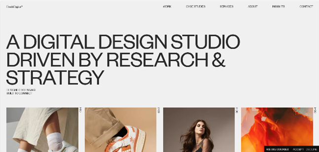
Option 1
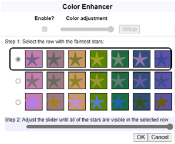
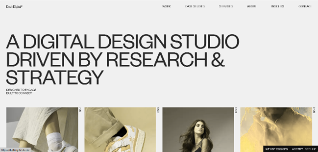
Option 2
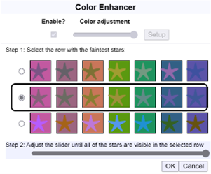
Option 3
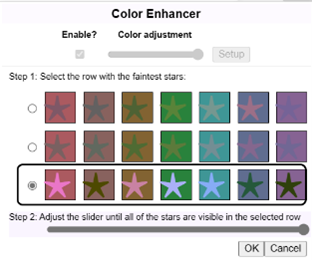
In order to get better insight into the accessibility for visually impaired users, I used the screen reader Speechify (Weitzman, 2017). Since the functionality of a screen reader is dependent on the semantic markup of the website, I could get a general sense of how semantic and accessible the website was. My experience with using Speechify on Dash Digital’s website was overall acceptable, but there were a few instances where the screen reader would read a button in confusing and redundant ways. This indicates that the semantic markup of that element could be improved upon. But overall, apart from the slight inconvenience, the website was made accessible for screen readers.
User Experience
The user experience of Dash Digital’s website felt friendly and approachable. One of the, possibly, less noticeable aspects of their website is the way they ask the user for permission to use cookies. The user isn’t immediately greeted with a pop-up window asking for permission. Dash Digital instead puts a small tab on the bottom right corner of the website asking whether the user permits the use of cookies or not. This detail highlights that there aren’t any dark design patterns used in order to force the user to make a choice. We can also argue that the wording might seem a bit vague, and the options of the tab are limited bordering on the grey area of ethics. The UX principles used on the tab might operate within the grey area but within the grander scheme of the website, the intention of not forcing users to make a decision by lowering its significance makes this feature ethically sound. The intention wasn’t to manipulate, but rather to offer an option.
The website makes good use of the ‘similarity and difference’ principle. This is evident in the interactivity of the hyperlinks and buttons. Whenever the user hovers over a hyperlink or a button, a short animation plays. The visual representation of the button and the hyperlink are very different, and the same goes for the animations. All hyperlinks look the same and play the same animations. The buttons also follow the same conventions. These two different elements are repeated throughout the website, allowing users to safely assume that all the elements following the same conventions do the same thing.
The website also includes a lot of interactive elements. When the user scrolls through the website, certain lines of text appear or play a smooth animation. This captivates the user’s attention without the intention of misdirecting them. The added visual arousal makes interacting with the website more interesting and memorable.
The navigation is flawlessly integrated into the website, carefully obeying the 3-click rule, which means that users are able to navigate to where they want to be within three clicks. The navigation bar can be toggled on or off allowing for a more focused browsing experience, but on certain pages the navigation bar automatically disappears when the user scrolls down and only reappears when the user is at the top of the page. This creates an inconsistency throughout the website which may cause minor confusion.
The design of the website is responsive to different aspect ratios. The visual aesthetics remain consistent and also provides the same functionality. A good point to mention is that on a touch screen device, the interactable images, hypertexts, and buttons don’t play animations anymore. This slight change of UX makes it so that the users interacting with the website on a touchscreen device have a less reactive experience.
User Interface
The visual hierarchy of a website can influence the way the users interact with the piece of media. Although mentioned in an earlier point, the cookies tab holds very insignificant visual traffic. A few aspects that might captivate the user’s attention would be the different colour that is used for the element. Overall, the intention of moving the cookie tab to the bottom right of the screen makes for a non-hostile approach to asking for user permission.
The use of whitespace throughout the website creates a comfortable digital environment for the user to navigate. It offers breathing room for the user and enhances visual clarity and readability. Whether or not a website includes sufficient whitespace can determine how hostile its digital environment feels for the user. An example of a website that completely rejects the idea of whitespace would be the South African Home Affairs website (Affairs, 2024). Apart from violating non-hostile design principle, I will mainly focus on the use of whitespace throughout the website. The website offers the user a main information area leaving a border on the left and right of the page. Although in concept it seems to have good intentions, in actuality the main idea of whitespace gets thrown out the window. The background is instead a visual pattern that creates a lot of visual traffic, making the website very visually overstimulating. This paired with the main colour theme makes for an uncomfortable user interface. Although Dash Digital’s website does not include the left and right borders, it successfully integrates whitespace into the user interface to create a non-hostile environment.
Dash Digital’s website uses a “Founders Grotesk” font all throughout. Founders Grotesk is a modern sans-serif typeface. Sans-serif fonts in “…electronic or virtual contexts … is a little easier to read.” (Anonomus, n.d.) This font makes it easier for users to engage with the text of the website. The text is arranged so that it is readable, and the Founders Grotesk font makes the text easily legible. This makes for a successful use in typography to create a positive user interface.
The branding throughout the website remains consistent and reflects Dash Digital’s identity. The colour scheme, fonts, imagery, and logos reinforce the companies brand identity, generating a sense of cohesiveness. The modest and simplistic aesthetic make it so that the user is not bombarded with an overwhelming amount of information. Information is segmented into digestible chunks, making it so that the synthesis of the information comes at a comfortable pace.
Conclusion
My analysis of Dash Digital’s website was based off the transparency, inclusivity, privacy and security, user empathy, and persuasive techniques used throughout the website. As mentioned, Dash Digital’s website meets the ethical standards to an acceptable degree. Dash Digital clearly shows that their intentions are governed by a user centered philosophy. Although there may be a few short comings, their intentions were directed to benefit the audience and not just for commercial success.
Delving into how Planet of Lana creates an immersive gameplay experience.
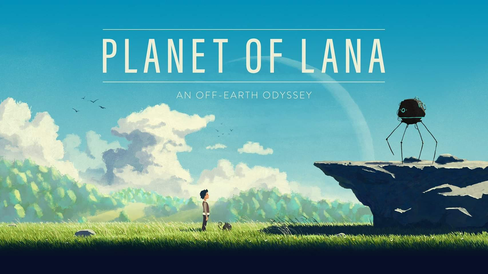
Wishfully (2023) Planet of Lana [Video Game]. Thunderful Publishing.
"A young girl and her loyal friend embark on a rescue mission through a colorful world full of cold machines and unfamiliar creatures. Planet of Lana is a cinematic puzzle adventure framed by an epic sci-fi saga that stretches across centuries and galaxies." - Steam Description
Clever puzzles, cute companions, and an alien world teeming with life. Planet of Lana was an immersive experience that has left a permanent impression in my library of games. In this blog post I will aim to analyze what Planet of Lana did in order to achieve such an effect. Was it the puzzle design? The visual aesthetic? The game feel? Or did Mui carry the whole franchise single-handedly? Follow along as I dissect the game and uncover its secrets and techniques.
Meeting Mui
Mui... is the cutest little companion that anyone could ever ask for, but opinions aside, what role did Mui play in the game? Is Mui just a marketing scheme just to lure unsuspecting players into boosting the games revenue? I can assure you that Mui plays a much bigger role than that! Not only does Mui look adorable, but Mui is also an essential part to the puzzle design of the game.
Mui gladly obeys what the player directs him to do: run here, sit there, push this, talk to that. Mui's small size, excellent obedience, and surprising dexterity allows him to reach places that Lana can't reach. Mui, the perfect little creature he is, has one vital flaw... he is deadly afraid of water. Each of Mui's little quirks are utilized by the designers to their full extent to create head-scratching puzzles by building player habits and eventually breaking them! Whether its escorting Mui across a flooded area or telling him to interact with other alien life-forms, Mui's presence is for certain not meaningless.
There is a section in the game where Mui gets captured by the colonizing alien machines, those dirty barstards, and the player spends a portion of the game without Mui. There comes a great realization where without Mui, Lana feels even less powerful that she already is (more on this later). The player builds a habit of incorporating Mui into their puzzle solution, that playing without him feels... empty.
*PS. I believe that the game deserves extra praise for allowing the player to pet Mui no matter how extreme the situation is. i.e. mid a boss fight.
Game Feel
Tagged as a "puzzle-platformer", you would expect the player movement to feel clean and crispy, empowering the player to do crazy flips and double-jump their way through the game... but Planet of Lana doesn't allow the player to do that. Instead, the fastest Lana can go is a leisurely jog. Lana makes the shortest jumps look difficult, and if Lana falls for a bit longer than a second, she dies... Lana will spend more time grappling to edges than making successful jumps. Why would the game designers do that? Why did they "disempower" the player from the fantasy that was initially expected with its association to platforming games?
The answer... to make the player feel a part of a world closely grounded in reality. To feel a part of a realistic world means you can't jump in thin air, you can't jump as far as a professional long jumper, and you can't out-run a machine, especially if you are just a child. The limitations that the game designers implement, makes Lana feel more realistic. Lana is just a regular kid on a journey to rescue her best friend and free her people. It gets frustrating at times when Lana isn't able to do the things that you want her to do, but that strengthens the fact that you are just a kid... and the whole world is against you.
These limitations also make the pace of the game feel a lot slower. Puzzles drag out and, in some cases, may become tedious to complete. But the pacing is something that the player can come to appreciate when you bring the audio and visual elements of the game into conversation.
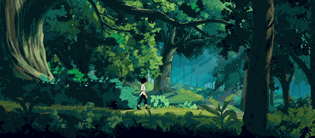
A Living Planet
The world that Planet of Lana puts the player in feels so... alive What did it do to achieve this? What does it enhance or intensify?
A gust of ambient wind blows past, you hear it rustle the leaves and brushes, you watch as the grass and leaves sway in natural chaos, and loose leaves drift past the screen. The world is constantly in motion. From the sprites squashing, stretching and swaying in the wind, to the occasional butterfly that flutters by, the game objects that "don't participate" in the mechanical play of the game still serve the purpose of adding liveliness to the game. The visual elements immerse the player visually in the Planet of Lana, but the game also incorporates audio elements that add and ambiance to the world that cannot be left out. Planet of Lana even incorporates audio as solutions to certain puzzles.
Planet of Lana trains the player into habits that pic up on visual and auditory motifs. The rhythmic beeping and flashing of the machines play a role in both the narrative and gameplay. Every time you hear mechanical beeping, you associate the scenario with the colonizing machines. And eventually this visual and auditory motif is spun on its head when Lana uncovers the lost history of the world.
Conclusion
The visual and auditory elements in Planet of Lana make the player feel a part of the environment. The world isn't just reacting to you, but the world itself is alive and acting on its own accord. Lana isn't some miracle baby who has superpowers and super-human athleticism, she is just a little girl trying desperately to save the people she cares about. Her compassion gains her the trust of Mui, and he helps her throughout the odyssey. The elements of the game allow the player to fully immerse themselves in the Planet of Lana. They aren't some unstoppable force that plows through the land, but rather another entity within the games rich eco-system.


 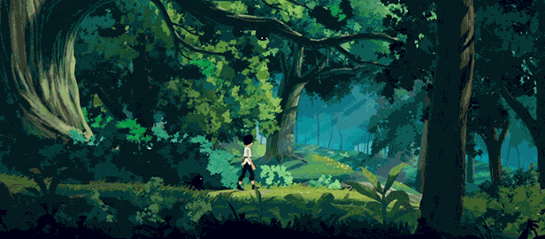
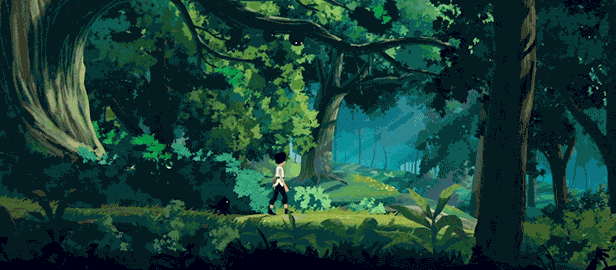